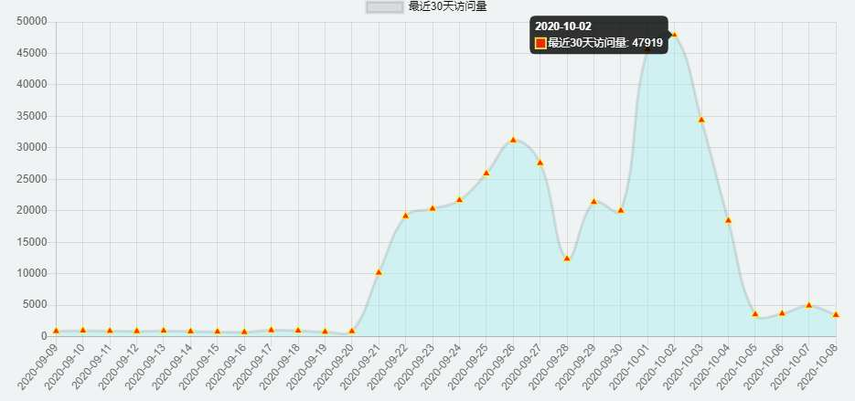
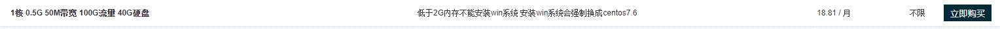
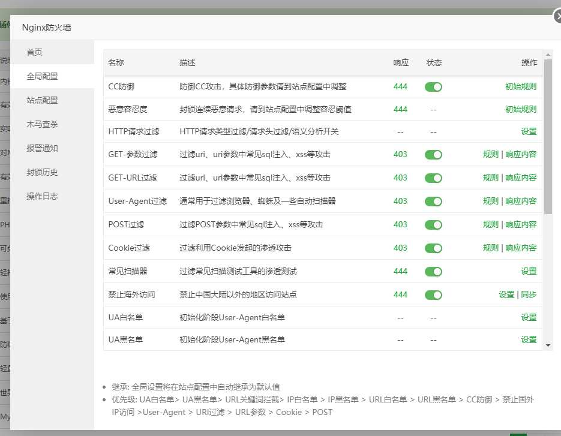

小水管服务器被cc攻击
- 作者:
- 淡白
- 创建时间：
- 2020-10-08 18:10:55
- cc nginx
摘要：作者描述了自己的小服务器遭受了CC攻击，攻击者一直调用其项目中的搜索接口，导致服务器流量消耗完毕，项目无法访问。为了解决这个问题，作者租了一台性能更好的服务器，并安装了宝塔面板和Nginx防火墙插件，通过查看请求日志和写黑名单限制，成功减少了大部分攻击和流量。最终，项目恢复正常使用。
遭受攻击
前两天我的小水管服务器被cc攻击,对方一直调我项目中的一个搜索接口,有时命中了关键词会返回很多数据,造成流量消耗。
达到了每天几万IP的访问,每秒20+

这是某一天的流量和请求数
 |
| |
|
虽然不是很多,但是在我小水管服务器(2Mpbs)看来已经是难以承受。
导致我的服务器流量被消耗完毕,导致项目无法访问软件无法正常使用。
解决
在我发现的时候流量已经被刷完了,导致服务器无法访问。
还好我的服务并不部署在这台服务器上,而是部署在k8s集群上。这台服务器只是起个网关代理作用。
于是我又租了一台服务器50M的服务器18一个月,虽然只有0.5g内存但是安装个Nginx没得问题。

低价服务器
购买后我先安装了宝塔面板和nginx。然后使用了一款里面的插件 Nginx防火墙
然后通过查看日志请求URL然后写个正则对请求进行黑名单限制就减少了大部分攻击和流量。

至此APP又能正常使用